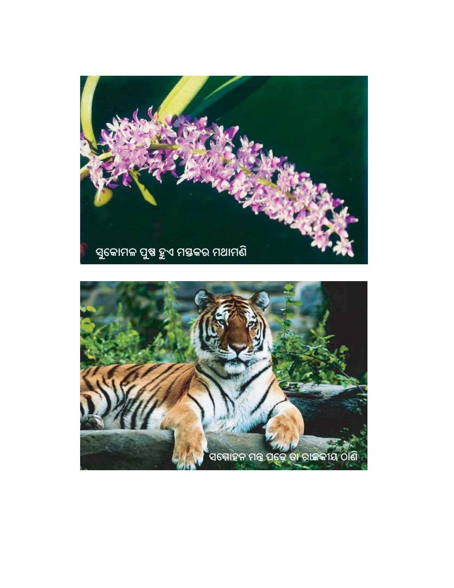

drushya-kAbya-bm.pdf · page 3
Static rendering from the preserved PDF; not an original website image.

Source: June2013Backup/OdiyaOrgNew/duradrusti/jan2007/dd5-1.zip :: archive/drushya-kAbya-bm.pdf
Static rendering from the preserved PDF; not an original website image.

Source: June2013Backup/OdiyaOrgNew/duradrusti/jan2007/dd5-1.zip :: archive/drushya-kAbya-bm.pdf